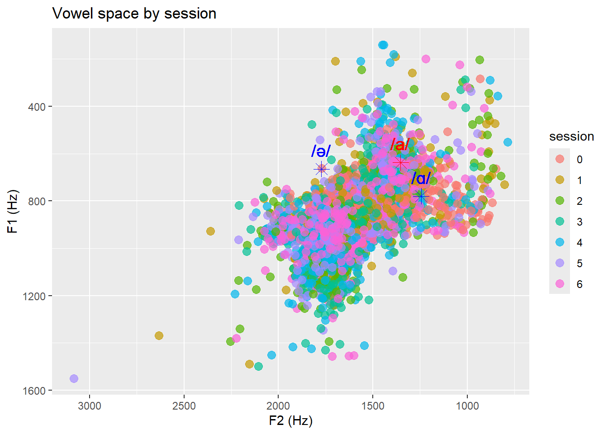
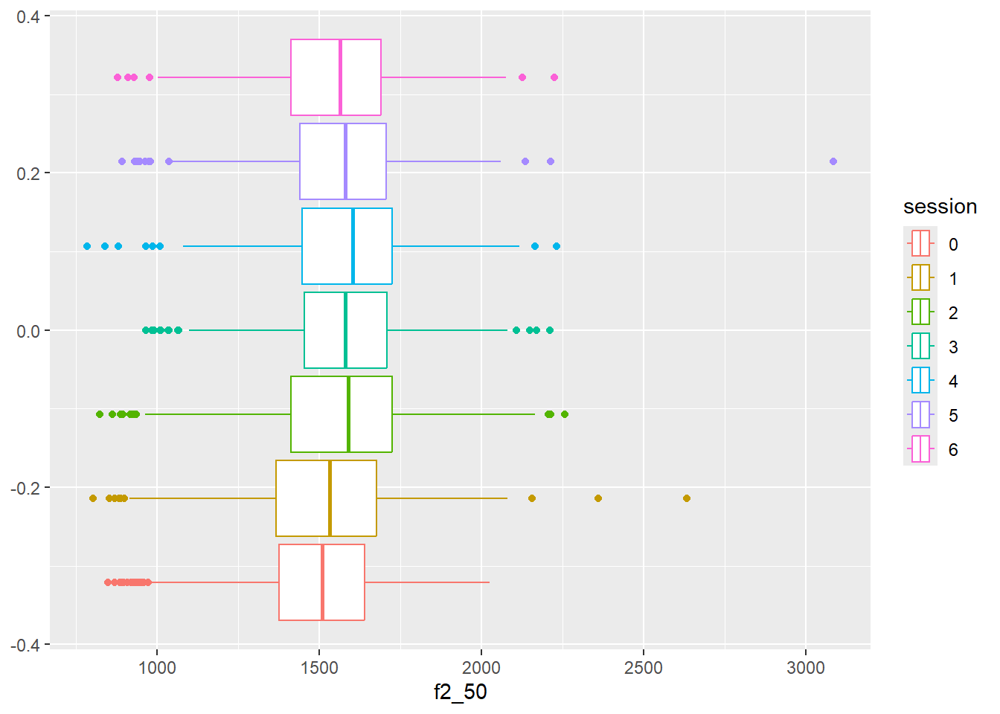
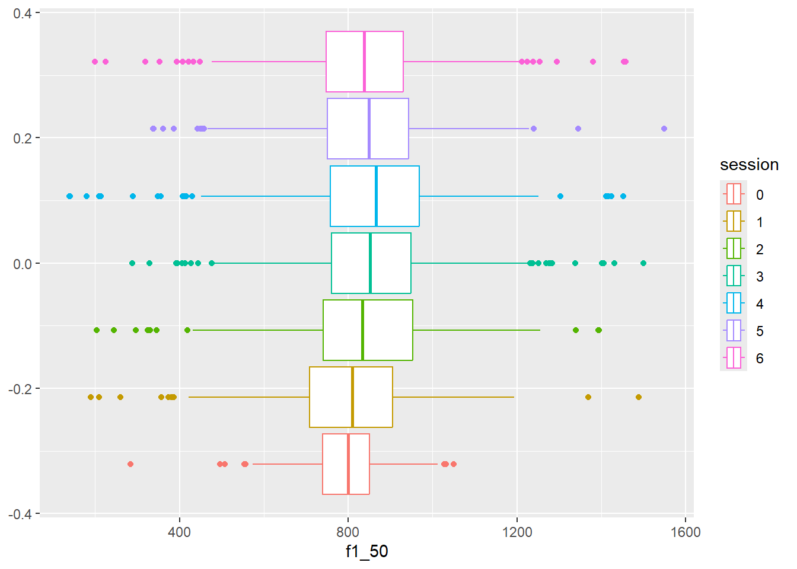
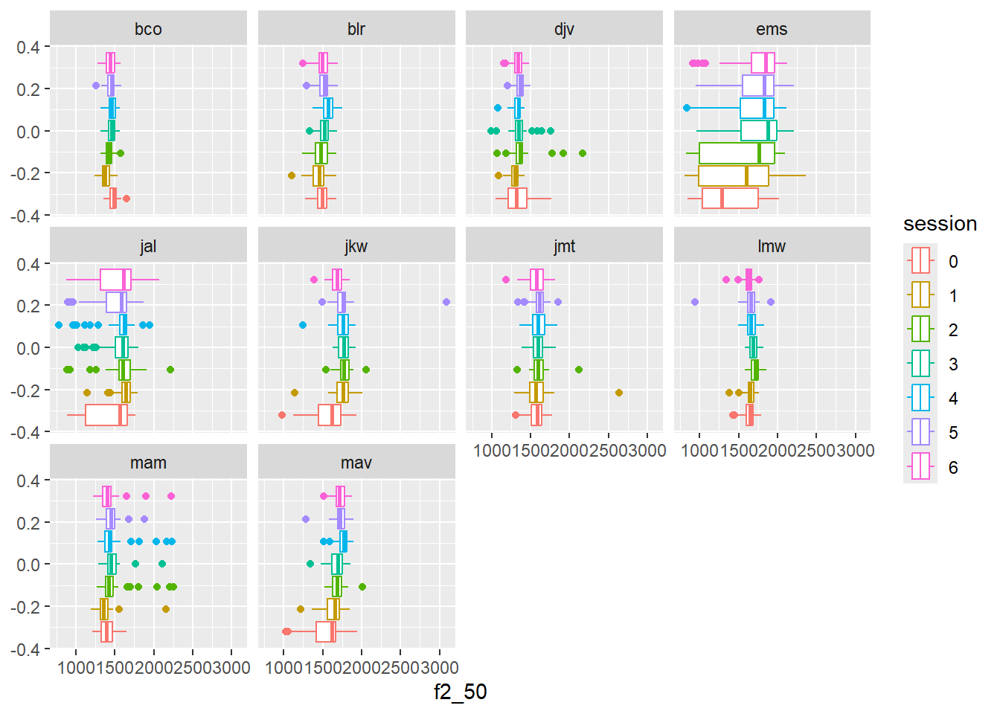
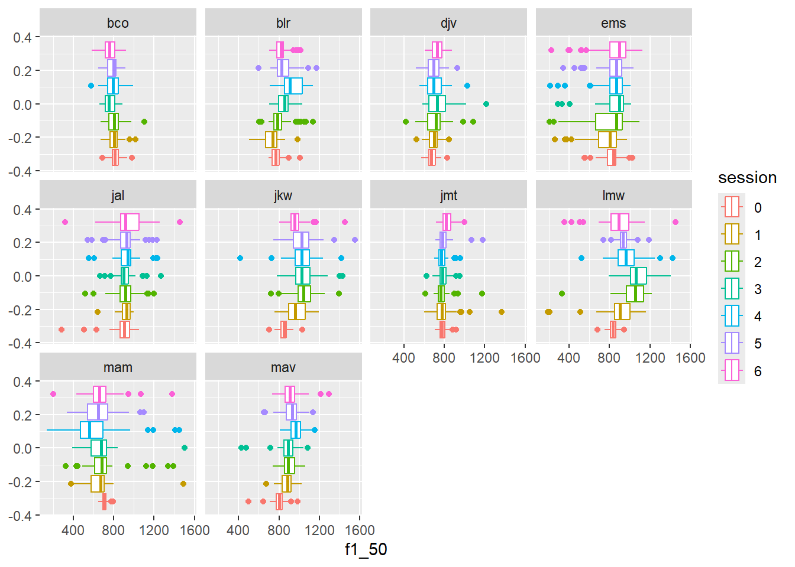
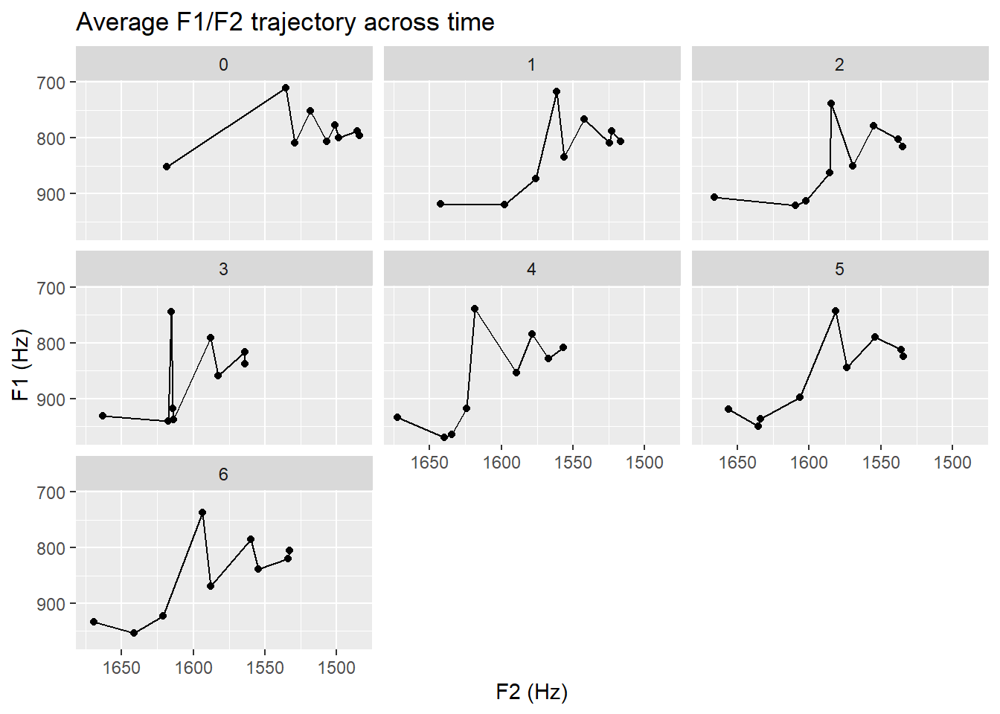
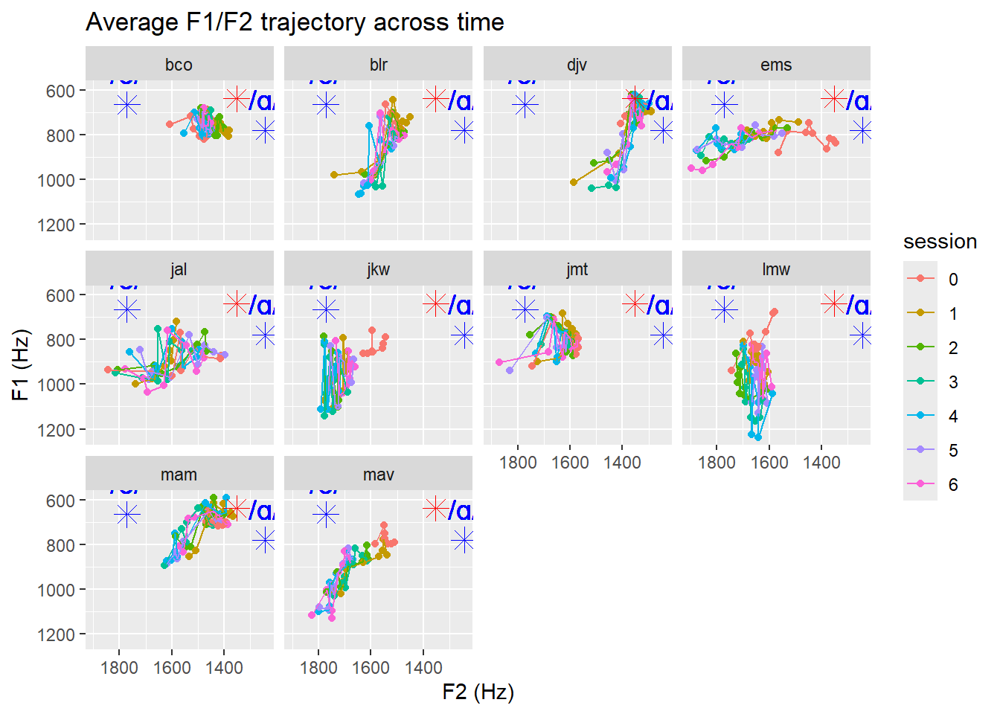
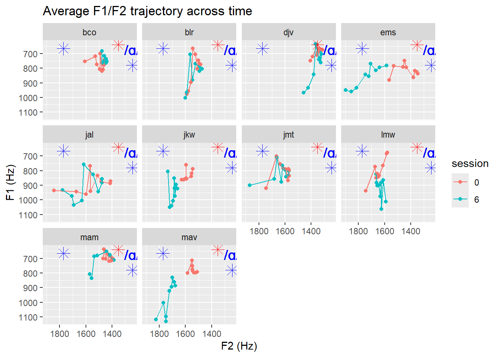

source(here::here("scripts","r","00_libs.R"))here() starts at C:/Users/rober/Desktop/schwa_to_aWarning: package 'ggplot2' was built under R version 4.5.1── Attaching core tidyverse packages ──────────────────────── tidyverse 2.0.0 ──
✔ dplyr 1.1.4 ✔ readr 2.1.5
✔ forcats 1.0.0 ✔ stringr 1.5.1
✔ ggplot2 4.0.0 ✔ tibble 3.2.1
✔ lubridate 1.9.4 ✔ tidyr 1.3.1
✔ purrr 1.0.4 ── Conflicts ────────────────────────────────────────── tidyverse_conflicts() ──
✖ dplyr::filter() masks stats::filter()
✖ dplyr::lag() masks stats::lag()
ℹ Use the conflicted package (<http://conflicted.r-lib.org/>) to force all conflicts to become errorssource(here::here("scripts","r","02_load_data.R"))Rows: 13440 Columns: 34
── Column specification ────────────────────────────────────────────────────────
Delimiter: ","
chr (5): file_name, phoneme, word, preceding_phone, following_phone
dbl (29): start_time, end_time, f1_10, f1_20, f1_30, f1_40, f1_50, f1_60, f1...
ℹ Use `spec()` to retrieve the full column specification for this data.
ℹ Specify the column types or set `show_col_types = FALSE` to quiet this message.dat_tidy %>%
na.omit %>%
group_by(session) %>%
summarize(f1_mean = mean(f1_50),
f2_mean = mean(f2_50)) %>%
kable()| session | f1_mean | f2_mean |
|---|---|---|
| 0 | 795.7134 | 1483.995 |
| 1 | 809.3835 | 1524.898 |
| 2 | 850.0287 | 1569.614 |
| 3 | 859.1652 | 1582.420 |
| 4 | 854.5217 | 1589.232 |
| 5 | 844.5669 | 1573.899 |
| 6 | 838.0321 | 1554.886 |
dat_tidy %>%
na.omit %>%
group_by(participant, session) %>%
summarize(f1_mean = mean(f1_50),
f2_mean = mean(f2_50))%>%
kable()`summarise()` has grouped output by 'participant'. You can override using the
`.groups` argument.| participant | session | f1_mean | f2_mean |
|---|---|---|---|
| bco | 0 | 819.2357 | 1477.469 |
| bco | 1 | 808.5231 | 1384.811 |
| bco | 2 | 805.0856 | 1425.338 |
| bco | 3 | 765.4462 | 1455.497 |
| bco | 4 | 795.6592 | 1460.336 |
| bco | 5 | 790.2960 | 1453.644 |
| bco | 6 | 760.6773 | 1446.171 |
| blr | 0 | 774.2228 | 1486.019 |
| blr | 1 | 721.8962 | 1451.058 |
| blr | 2 | 809.9650 | 1487.043 |
| blr | 3 | 851.9926 | 1519.939 |
| blr | 4 | 928.8904 | 1567.795 |
| blr | 5 | 850.7499 | 1512.705 |
| blr | 6 | 819.7668 | 1492.093 |
| djv | 0 | 680.6608 | 1341.024 |
| djv | 1 | 693.8964 | 1297.774 |
| djv | 2 | 711.7868 | 1379.199 |
| djv | 3 | 751.5104 | 1352.248 |
| djv | 4 | 708.1712 | 1332.654 |
| djv | 5 | 696.8748 | 1357.054 |
| djv | 6 | 730.5227 | 1336.352 |
| ems | 0 | 817.8665 | 1369.769 |
| ems | 1 | 744.3573 | 1489.522 |
| ems | 2 | 768.7392 | 1581.358 |
| ems | 3 | 855.0833 | 1737.475 |
| ems | 4 | 827.8945 | 1711.987 |
| ems | 5 | 837.3952 | 1715.825 |
| ems | 6 | 842.0286 | 1746.127 |
| jal | 0 | 886.8706 | 1415.570 |
| jal | 1 | 917.7594 | 1628.395 |
| jal | 2 | 923.4424 | 1580.624 |
| jal | 3 | 910.3962 | 1558.296 |
| jal | 4 | 926.9062 | 1559.131 |
| jal | 5 | 912.3381 | 1498.631 |
| jal | 6 | 943.0269 | 1506.245 |
| jkw | 0 | 851.4988 | 1595.236 |
| jkw | 1 | 975.2551 | 1752.450 |
| jkw | 2 | 1046.0961 | 1768.438 |
| jkw | 3 | 1039.2842 | 1768.031 |
| jkw | 4 | 1018.3073 | 1757.765 |
| jkw | 5 | 1033.0325 | 1763.185 |
| jkw | 6 | 973.9146 | 1680.429 |
| jmt | 0 | 786.7935 | 1574.345 |
| jmt | 1 | 792.8730 | 1587.892 |
| jmt | 2 | 780.1083 | 1604.105 |
| jmt | 3 | 790.9854 | 1592.828 |
| jmt | 4 | 785.1556 | 1611.426 |
| jmt | 5 | 800.4520 | 1610.079 |
| jmt | 6 | 829.9878 | 1571.924 |
| lmw | 0 | 833.3739 | 1640.899 |
| lmw | 1 | 902.5557 | 1651.348 |
| lmw | 2 | 1041.2463 | 1713.303 |
| lmw | 3 | 1078.9472 | 1690.201 |
| lmw | 4 | 968.8937 | 1661.598 |
| lmw | 5 | 941.4912 | 1645.546 |
| lmw | 6 | 881.0460 | 1626.909 |
| mam | 0 | 710.4865 | 1400.382 |
| mam | 1 | 656.8285 | 1373.617 |
| mam | 2 | 712.4744 | 1467.248 |
| mam | 3 | 665.2545 | 1471.871 |
| mam | 4 | 614.1875 | 1471.933 |
| mam | 5 | 655.3557 | 1454.201 |
| mam | 6 | 675.2489 | 1417.992 |
| mav | 0 | 796.5347 | 1537.125 |
| mav | 1 | 879.8739 | 1629.514 |
| mav | 2 | 901.3433 | 1689.482 |
| mav | 3 | 882.7516 | 1677.811 |
| mav | 4 | 971.1516 | 1757.692 |
| mav | 5 | 927.6840 | 1728.124 |
| mav | 6 | 922.6685 | 1722.604 |
ggplot(dat_tidy, aes(x = f2_50, y = f1_50, color = session)) +
geom_point(alpha = 0.7, size = 3) +
scale_y_reverse() +
scale_x_reverse() +
labs(x = "F2 (Hz)", y = "F1 (Hz)", title = "Vowel space by session") +
# spanish /a/ from bradlow 1995
geom_point(aes(x = 1353, y = 638), color = "red", size = 4, shape = 8) +
geom_text(aes(x = 1353, y = 638, label = "/a/"), color = "red", vjust = -1, size = 5) +
# english schwa from flemming 2009
geom_point(aes(x = 1772, y = 665), color = "blue", size = 4, shape = 8) +
geom_text(aes(x = 1772, y = 665, label = "/ə/"), color = "blue", vjust = -1, size = 5) +
# english /a/ from bradlow 1995
geom_point(aes(x = 1244, y = 780), color = "blue", size = 4, shape = 8) +
geom_text(aes(x = 1244, y = 780, label = "/ɑ/"), color = "blue", vjust = -1, size = 5)Warning in geom_point(aes(x = 1353, y = 638), color = "red", size = 4, shape = 8): All aesthetics have length 1, but the data has 3780 rows.
ℹ Please consider using `annotate()` or provide this layer with data containing
a single row.Warning in geom_text(aes(x = 1353, y = 638, label = "/a/"), color = "red", : All aesthetics have length 1, but the data has 3780 rows.
ℹ Please consider using `annotate()` or provide this layer with data containing
a single row.Warning in geom_point(aes(x = 1772, y = 665), color = "blue", size = 4, : All aesthetics have length 1, but the data has 3780 rows.
ℹ Please consider using `annotate()` or provide this layer with data containing
a single row.Warning in geom_text(aes(x = 1772, y = 665, label = "/ə/"), color = "blue", : All aesthetics have length 1, but the data has 3780 rows.
ℹ Please consider using `annotate()` or provide this layer with data containing
a single row.Warning in geom_point(aes(x = 1244, y = 780), color = "blue", size = 4, : All aesthetics have length 1, but the data has 3780 rows.
ℹ Please consider using `annotate()` or provide this layer with data containing
a single row.Warning in geom_text(aes(x = 1244, y = 780, label = "/ɑ/"), color = "blue", : All aesthetics have length 1, but the data has 3780 rows.
ℹ Please consider using `annotate()` or provide this layer with data containing
a single row.Warning: Removed 1 row containing missing values or values outside the scale range
(`geom_point()`).
ggplot(dat_tidy, aes(x = f2_50, color = session)) +
geom_boxplot()Warning: Removed 1 row containing non-finite outside the scale range
(`stat_boxplot()`).
ggplot(dat_tidy, aes(x = f1_50, color = session)) +
geom_boxplot()Warning: Removed 1 row containing non-finite outside the scale range
(`stat_boxplot()`).
ggplot(dat_tidy, aes(x = f2_50, color = session)) +
facet_wrap(~participant) +
geom_boxplot()Warning: Removed 1 row containing non-finite outside the scale range
(`stat_boxplot()`).
ggplot(dat_tidy, aes(x = f1_50, color = session)) +
facet_wrap(~participant) +
geom_boxplot()Warning: Removed 1 row containing non-finite outside the scale range
(`stat_boxplot()`).
dat_long <- dat_tidy %>%
pivot_longer(
cols = matches("f[12]_\\d+"),
names_to = c("formant", "percent"),
names_pattern = "(f[12])_(\\d+)",
values_to = "value"
) %>%
mutate(percent = as.numeric(percent))
dat_wide <- dat_long %>%
pivot_wider(names_from = formant, values_from = value)
dat_avg <- dat_wide %>%
group_by(percent, session) %>%
summarise(
f1_mean = mean(f1, na.rm = TRUE),
f2_mean = mean(f2, na.rm = TRUE)
)`summarise()` has grouped output by 'percent'. You can override using the
`.groups` argument.ggplot(dat_avg, aes(x = f2_mean, y = f1_mean)) +
geom_point() +
geom_line() +
facet_wrap(~session) +
scale_y_reverse() +
scale_x_reverse() +
labs(x = "F2 (Hz)", y = "F1 (Hz)", title = "Average F1/F2 trajectory across time")
dat_avg_participants <- dat_wide %>%
group_by(percent, session, participant) %>%
summarise(
f1_mean = mean(f1, na.rm = TRUE),
f2_mean = mean(f2, na.rm = TRUE)
)`summarise()` has grouped output by 'percent', 'session'. You can override
using the `.groups` argument.ggplot(dat_avg_participants, aes(x = f2_mean, y = f1_mean, color = session)) +
geom_point() +
geom_line() +
facet_wrap(~ participant) +
scale_y_reverse() +
scale_x_reverse() +
labs(x = "F2 (Hz)", y = "F1 (Hz)", title = "Average F1/F2 trajectory across time") +
# spanish /a/ from bradlow 1995
geom_point(aes(x = 1353, y = 638), color = "red", size = 4, shape = 8) +
geom_text(aes(x = 1353, y = 638, label = "/a/"), color = "red", vjust = -1, size = 5) +
# english schwa from flemming 2009
geom_point(aes(x = 1772, y = 665), color = "blue", size = 4, shape = 8) +
geom_text(aes(x = 1772, y = 665, label = "/ə/"), color = "blue", vjust = -1, size = 5) +
# english /a/ from bradlow 1995
geom_point(aes(x = 1244, y = 780), color = "blue", size = 4, shape = 8) +
geom_text(aes(x = 1244, y = 780, label = "/ɑ/"), color = "blue", vjust = -1, size = 5)Warning in geom_point(aes(x = 1353, y = 638), color = "red", size = 4, shape = 8): All aesthetics have length 1, but the data has 630 rows.
ℹ Please consider using `annotate()` or provide this layer with data containing
a single row.Warning in geom_text(aes(x = 1353, y = 638, label = "/a/"), color = "red", : All aesthetics have length 1, but the data has 630 rows.
ℹ Please consider using `annotate()` or provide this layer with data containing
a single row.Warning in geom_point(aes(x = 1772, y = 665), color = "blue", size = 4, : All aesthetics have length 1, but the data has 630 rows.
ℹ Please consider using `annotate()` or provide this layer with data containing
a single row.Warning in geom_text(aes(x = 1772, y = 665, label = "/ə/"), color = "blue", : All aesthetics have length 1, but the data has 630 rows.
ℹ Please consider using `annotate()` or provide this layer with data containing
a single row.Warning in geom_point(aes(x = 1244, y = 780), color = "blue", size = 4, : All aesthetics have length 1, but the data has 630 rows.
ℹ Please consider using `annotate()` or provide this layer with data containing
a single row.Warning in geom_text(aes(x = 1244, y = 780, label = "/ɑ/"), color = "blue", : All aesthetics have length 1, but the data has 630 rows.
ℹ Please consider using `annotate()` or provide this layer with data containing
a single row.
ggplot(dat_avg_participants %>% filter(session %in% c(0,6)), aes(x = f2_mean, y = f1_mean, color = session)) +
geom_point() +
geom_line() +
facet_wrap(~ participant) +
scale_y_reverse() +
scale_x_reverse() +
labs(x = "F2 (Hz)", y = "F1 (Hz)", title = "Average F1/F2 trajectory across time") +
# spanish /a/ from bradlow 1995
geom_point(aes(x = 1353, y = 638), color = "red", size = 4, shape = 8) +
geom_text(aes(x = 1353, y = 638, label = "/a/"), color = "red", vjust = -1, size = 5) +
# english schwa from flemming 2009
geom_point(aes(x = 1772, y = 665), color = "blue", size = 4, shape = 8) +
geom_text(aes(x = 1772, y = 665, label = "/ə/"), color = "blue", vjust = -1, size = 5) +
# english /a/ from bradlow 1995
geom_point(aes(x = 1244, y = 780), color = "blue", size = 4, shape = 8) +
geom_text(aes(x = 1244, y = 780, label = "/ɑ/"), color = "blue", vjust = -1, size = 5)Warning in geom_point(aes(x = 1353, y = 638), color = "red", size = 4, shape = 8): All aesthetics have length 1, but the data has 180 rows.
ℹ Please consider using `annotate()` or provide this layer with data containing
a single row.Warning in geom_text(aes(x = 1353, y = 638, label = "/a/"), color = "red", : All aesthetics have length 1, but the data has 180 rows.
ℹ Please consider using `annotate()` or provide this layer with data containing
a single row.Warning in geom_point(aes(x = 1772, y = 665), color = "blue", size = 4, : All aesthetics have length 1, but the data has 180 rows.
ℹ Please consider using `annotate()` or provide this layer with data containing
a single row.Warning in geom_text(aes(x = 1772, y = 665, label = "/ə/"), color = "blue", : All aesthetics have length 1, but the data has 180 rows.
ℹ Please consider using `annotate()` or provide this layer with data containing
a single row.Warning in geom_point(aes(x = 1244, y = 780), color = "blue", size = 4, : All aesthetics have length 1, but the data has 180 rows.
ℹ Please consider using `annotate()` or provide this layer with data containing
a single row.Warning in geom_text(aes(x = 1244, y = 780, label = "/ɑ/"), color = "blue", : All aesthetics have length 1, but the data has 180 rows.
ℹ Please consider using `annotate()` or provide this layer with data containing
a single row.